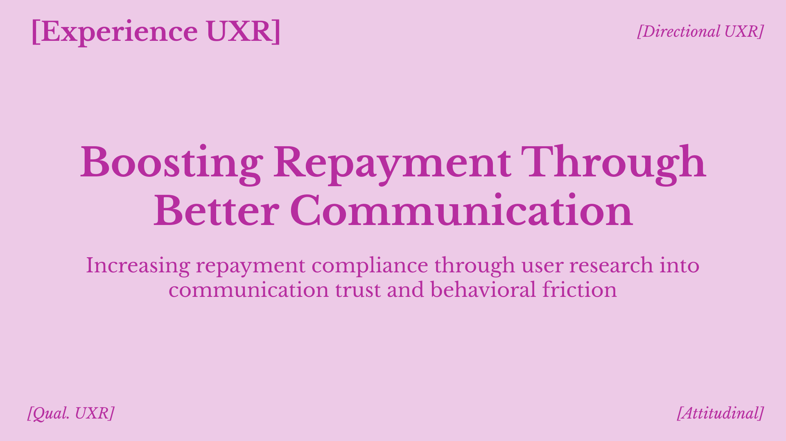
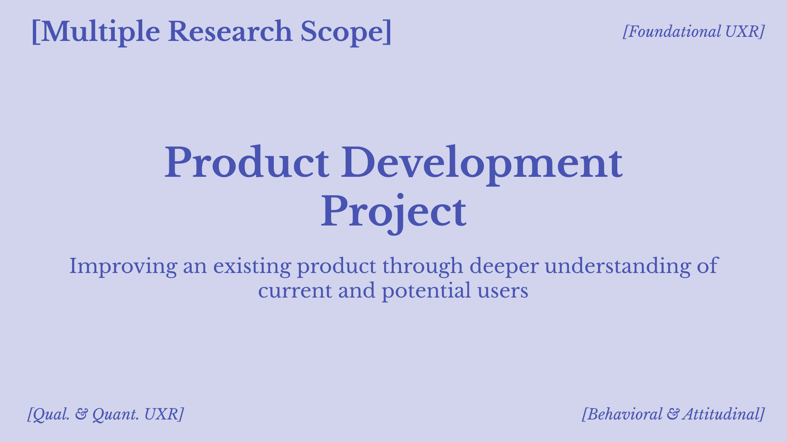
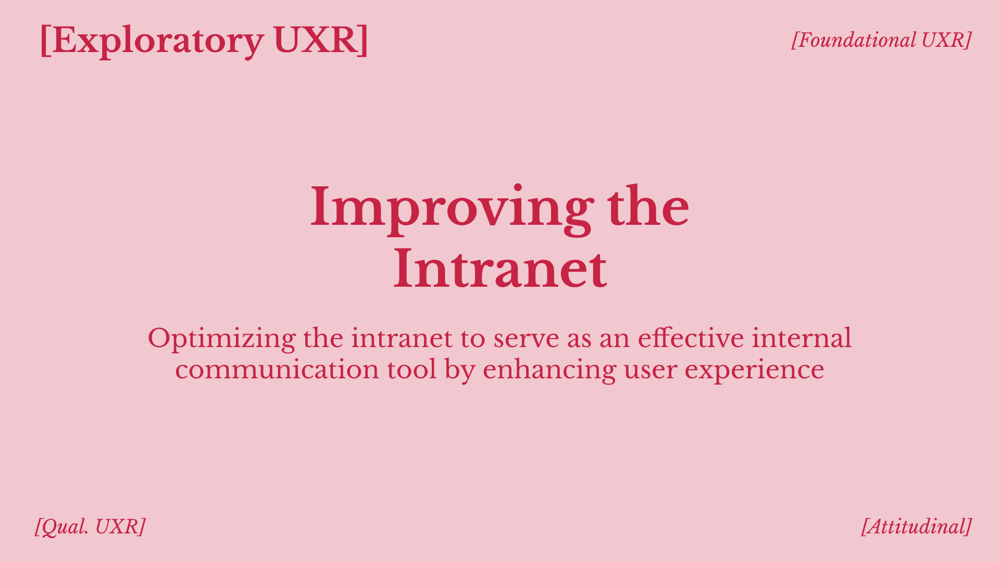

Year: 2024Role: UX ResearcherResearch Scope: Experience UXRSector: Health Tech, InsuranceCompany: Health Insurance CompanyResearch Method: InterviewPage: LinkHighlights? Strong research impact, Clear cross-functional collaboration, Quick directional UX research
Year: 2021Role: UX Research Consultant, Service DesignerResearch Scope: Exploratory, Evaluative, & Experience UXRSector: Travel, Search EngineCompany: Client CompanyResearch Method: Survey, Interview, Usability TestingArtifacts: User Personas, Journey MapsPage: LinkHighlights? Co-creation, Stakeholder workshop facilitation, Client consulting experience
Year: 2025Role: UX Research ConsultantResearch Scope: Exploratory UXRSector: Performing Arts, Education, NonprofitCompany: Canada's National Ballet SchoolResearch Method: Interview, Expert Review, Secondary ResearchPage: LinkHighlights? Full-access to research process and data synthesis, Method triangulation expertise, Internal users as research participants